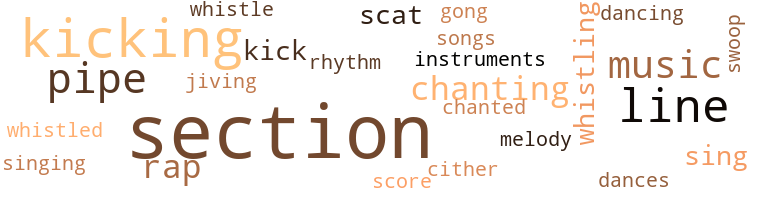
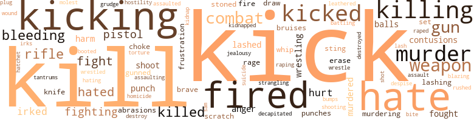

Poppy, by Johnson, Hubert E. and Loretta (1969)
70 music-related terms matched in this text.
Most frequent terms in this topic: section (18); kicking (7); line (5); pipes (4); music (4)
dance.n.01
Definition: an artistic form of nonverbal communication
| word | sentence |
|---|---|
| dances | Little Timothy , started doing one of those crazy go-go dances , kicking and stepping in the Chinese food and dishes all over the place . |
dance.v.03
Definition: skip, leap, or move up and down or sideways
| word | sentence |
|---|---|
| dancing | They were dancing to the music of fox-trot . |
gong.n.01
Definition: a percussion instrument consisting of a metal plate that is struck with a softheaded drumstick
| word | sentence |
|---|---|
| gong | In waiting for Blackburn the minutes seemed like hours , the steady ticking of the wall clock sounded like ) oc chink torture gong , used in Korea for brain-washing . |
intonation.n.03
Definition: the act of singing in a monotonous tone
| word | sentence |
|---|---|
| chanting | But then the tall fellow started some Oriental chanting . |
| chanting | Simultaneously , as the flame flickered out , the tall fellow stopped his chanting . |
jive.v.01
Definition: dance to jive music; dance the jive
| word | sentence |
|---|---|
| Jiving | That is a Jiving hell , I know for I have tried to kick it that way , that is why I 'm still an addict . . . Why ? |
kick.v.04
Definition: kick a leg up
| word | sentence |
|---|---|
| kicking | Little Timothy , started doing one of those crazy go-go dances , kicking and stepping in the Chinese food and dishes all over the place . |
| kicking | James struggled frantically with the door knob , kicking at the door . |
| Kicking | Kicking the habit without the help of medication is called cold-turkey . |
| kick | After looking around for a moment , Len Mboya got his answer , If you 've seen one hippie , you have practically seen them all , male or female , With his Afro haircut , all he had to do was pull his thick fur collar well up around his ears , then kick his shoes over under the cigarette machine . |
| kicking | Dick resisted by punching and kicking at Joe . |
| kick | One of them started to kick Foster between the legs , as he lay sprawled face down on the floor . |
| kicking | Richard 's room-mate was wakened again from the sound of Richard kicking the foot of the bed . |
| kicking | At that time of the night , everything is quiet , if you can learn to block out the common city noises , that are ever present , passing automobiles , sirens , passing subway trains , and drunks , kicking tin cans up and down the sidewalk . |
| kicking | After finishing it , he started cooing like a dove , and waving and kicking his feet about . |
| kicking | Richard was serious about kicking the habit . |
music.n.01
Definition: an artistic form of auditory communication incorporating instrumental or vocal tones in a structured and continuous manner
| word | sentence |
|---|---|
| music | They were dancing to the music of fox-trot . |
| music | Arrugh , do n't be , this album will help you to loosen up a bit , just listen to that sweet soul disturbing music , boot - root - root - ooo-tu-tu . |
| music | But now , he was only interested in making music with Betty . |
| music | Imperceptibly , through his beaded eyes , who the hell talking about women , HAW HAW HAW , that 's as old as man , you have n't lived until you made music with a young college male student . . . . |
musical_instrument.n.01
Definition: any of various devices or contrivances that can be used to produce musical tones or sounds
| word | sentence |
|---|---|
| instruments | Lester lost all track of time and sense of direction , he had to depend heavily on the instruments that were spinning like mad , the nose of the air - plane buckled , dipped down , then tossed back up again ; it rolled , pitched and yawed , most of the time out of control , the lightning streaked through the sky , followed shortly by loud claps of thunder , that would shake the airplane something fearful . |
pipe.n.04
Definition: a tubular wind instrument
| word | sentence |
|---|---|
| pipes | The chief ordered the wagon pipes to be used , the roof was flooded with tons of water , then they were shut down to see what would develop . |
| pipes | HUH , I knew those wagon pipes would do the trick . |
| pipes | The chief was right , the captain clung onto broken pipes and was climbing back up . |
| pipe | Now if you policemen and narcotic agents would like to help in this operation , you can spread out , with my men while they surround this building and keep him busy , then if he do n't jump , we will blast his ass from up there by using a wagon pipe . . . . |
| pipes | Finally he was in a good angle , for the nets below , the big wagon pipes was turned on at full blast . |
rap.n.05
Definition: genre of African-American music of the 1980s and 1990s in which rhyming lyrics are chanted to a musical accompaniment; several forms of rap have emerged
| word | sentence |
|---|---|
| raps | Pardon the expression , but this mangy bastard , gave me a couple raps in the ribs . |
| rap | They did n't listen and Leonard had to serve some time for the rap . |
| raps | Dick gave it a few forceful raps . |
rhythm.n.04
Definition: the arrangement of spoken words alternating stressed and unstressed elements
| word | sentence |
|---|---|
| rhythm | His heart fluttered wildly , then settled back to its normal rhythm ticking . . . Ma'am . . . Ma'am you 're doing just fine . |
scat.n.01
Definition: singing jazz; the singer substitutes nonsense syllables for the words of the song and tries to sound like a musical instrument
| word | sentence |
|---|---|
| scat | Better mosey on away from this spot , getting down from the scat , and restarting the motorcycle . |
| scat | I had to half drag him out draped him over the rear scat , fastened him there with a seat belt . |
score.n.02
Definition: a written form of a musical composition; parts for different instruments appear on separate staves on large pages
| word | sentence |
|---|---|
| score | He did look like the hideous type of person that would piss on a business partner 's bed , to even up an old score . |
section.n.01
Definition: a self-contained part of a larger composition (written or musical)
| word | sentence |
|---|---|
| section | Nancy got of at the top floor , walked straight into the secretarial section of the office . |
| section | Nancy walked out into the secretarial section of the office . |
| section | Dick did n't spare the horses in going up to Yonkers , he headed right for the residential section . |
| section | At this time Little Timothy was hid behind the wall to wall curtains , peeping through two joining section of the curtains . |
| section | Hummm , let 's see that should come under the section of points of interest . |
| section | Some time later , after thoroughly cheeking the hack-guide , no seances under any section . |
| section | At first he lost them in the Times Square section . |
| section | At the pinnacle of their passion , the sound of the dark clad form , forcing his way in through terrace section of the apartment was muffled out . |
| section | He had his entire office and private secretarial section modernized . |
| section | A Sony television system scanners covered the entire secretarial section , controlled by Blackburn . |
| section | Barbara left Blackburn 's office and went into the secretarial section . |
| section | Suddenly a weak section of the webbing gave way , not a second to soon . |
| section | Jose Gomez lived in the Red Hook section of Brooklyn with his wife , daughter and son . |
| section | He ran a chain of local German-American delicatessens and fresh fish markets throughout Queens and Washington Heights section . |
| section | Before reaching the main switching section , they had to keep low , to keep the towerman from spotting them . |
| section | After better than a half hour of chasing the two suspects through the streets of the residential section , finally they were maneuvered into the run-down section of town , then the police , quickly tightened the dragnet to block oil a four block square , sealing Blackburn and the captain within the perimeter . . . . |
| section | After better than a half hour of chasing the two suspects through the streets of the residential section , finally they were maneuvered into the run-down section of town , then the police , quickly tightened the dragnet to block oil a four block square , sealing Blackburn and the captain within the perimeter . . . . |
| section | The captain was ordered to the roof of the hotel , while Blackburn took up position on the ground floor lobby section of the Hotel . |
sing.v.02
Definition: produce tones with the voice
| word | sentence |
|---|---|
| sing | . . . Nat , did any one ever tell you , you sing better than a pigeon on a stool , HAW HAW . . . . |
| sing | If he know anything , and the Feds picked his ass up , he would sing his fool-head off . |
singing.n.01
Definition: the act of singing vocal music
| word | sentence |
|---|---|
| singing | He never knew from one minute to the other whether they were singing or poking fun at him . |
song.n.01
Definition: a short musical composition with words
| word | sentence |
|---|---|
| songs | As he scurried , side stepping the pedestrians on the sidewalk , he whistled one of his favorite western songs . |
swoop.n.01
Definition: (music) rapid sliding up or down the musical scale
| word | sentence |
|---|---|
| swoop | Whenever he fell or smeared some thing , she would swoop in ready to clean up the mess , with well rehearsed instruction on why it should n't have happened , and how to prevent such things in the future . |
tone.v.01
Definition: utter monotonously and repetitively and rhythmically
| word | sentence |
|---|---|
| chanting | Listening to the natives chanting in many different dialects . |
| chanted | And while they chanted , some of the natives puffed away on some kind of weeds they used as a substitute for tobacco . |
tune.n.01
Definition: a succession of notes forming a distinctive sequence
| word | sentence |
|---|---|
| line | Hummm , that puts a kink in my line . |
| lines | The only problem he had was trying to get back into his own lines , without getting his ass shot off , whenever he forgot the pass word . |
| melody | Now every uttered word sounded like a sweet melody ; he could differentiate between the evil and the good , his brain worked perfectly , but in a way it gave you the impression that he felt like superman and did n't give a damn too much about anything . |
| line | I do n't know , but maybe that is why I found myself sitting next to a loud talking boisterous Marine , sitting at the bar with two bouncers hovering over him , trying to keep him in line . |
| line | Dick , I think I have said too much already , so let 's just drop this line of talk . . . But Nancy , when we started this little thing we got going , I knew you were married , and I would be sticking my neck out , but I did n't have any intention of running into dope . |
| line | Mboya , in his car cruised around the area , until he spotted them standing in line at the Radio City Music Hall . |
| line | . . . Well fellows , this is where I have to draw a line , between friendship and department business . |
whistle.v.01
Definition: make whistling sounds
| word | sentence |
|---|---|
| whistled | As he scurried , side stepping the pedestrians on the sidewalk , he whistled one of his favorite western songs . |
| whistling | Blackburn took the quarter and went whistling down the sidewalk . |
| whistle | The wind outside would gust and whistle past a loose shingle on the roof . |
| whistling | Dick hopped off his motorcycle , clicking his heels , and whistling as he scurried up to the door . |
zither.n.01
Definition: a musical stringed instrument with strings stretched over a flat sounding board; it is laid flat and played with a plectrum and with fingers
| word | sentence |
|---|---|
| cither | The purpose of this whole thing is that the unfortunate late one , if and whereever they might turn-up after death , if it should be a place without booze , by pouring this bottle of scotch on this grave , this would assure cither one of them a supply of booze to wet their throats once in a while . |
284 violence-related terms matched in this text.
Most frequent terms in this topic: kill (16); hate (13); kick (13); kicking (12); killing (11)
abrasion.n.01
Definition: an abraded area where the skin is torn or worn off
| word | sentence |
|---|---|
| scratch | Dick would have liked to have told them to go scratch their asses , but there was a policeman eyeing either him or his Yamaha motorcycle super-duper equipment . |
| abrasions | Other than a nasty lump on his forehead and some minor abrasions and contusions , his physical condition was excellent . |
| abrasions | The next afternoon Dick 's broken body was examined for the possible cause of death , there were no bullet holes found ; he had a broken neck , fractured skull , cut , abrasions , punctures and contusions , all inflicted on his body by garbage cans , broken whisky bottles and rats and cats bites . |
| scratch | He was sending Castro a personal telegram , telling him to go scratch his ass . |
anger.n.01
Definition: a strong emotion; a feeling that is oriented toward some real or supposed grievance
| word | sentence |
|---|---|
| anger | In anger , the Marine 's face turned red like a tomato . . . . |
| anger | Leonard muttered a few words in anger . |
| anger | Richard Blackburn , rich kid , spoiled rotten , grew into a man , and all of that anger and frustration multiplied . |
assail.v.01
Definition: attack someone physically or emotionally
| word | sentence |
|---|---|
| assaulting | Leonard stuck to his story of not assaulting Richard Blackburn that night while he was still on that drug trip . |
| assaulted | . . . Richie , Leonard is being held as a insane person , they think that he assaulted you . . . . |
battle.v.01
Definition: battle or contend against in or as if in a battle
| word | sentence |
|---|---|
| battling | The broadcaster announced calmly that the firefighters were battling a four alarm blaze , in a newly built modern design office building in midtown Manhattan . |
blaze_away.v.02
Definition: shoot rapidly and repeatedly
| word | sentence |
|---|---|
| blazing | At that moment , the expert riflemen from the ground started blazing away for all they were worth . |
bleeding.n.01
Definition: the flow of blood from a ruptured blood vessel
| word | sentence |
|---|---|
| bleeding | Recognizing the critically swollen , battered and bleeding , semi-unconscious boy as the Blackburn 's own son . |
| bleeding | Leonard 's hands were red raw and bleeding ; he was exhausted and needed some assistance to help tie up the skiff . |
| bleeding | It 's just that my bleeding ulcers at times like this talk to each other . . . Oh ! |
| bleeding | Dick , your stomach is growling again , do n't tell me that your bleeding ulcers have any room to be squawking after the way you just ate . |
| bleeding | . . . Because the boss said not to if he is dead how are we going to find the stuff . . . Sorry about ( hat , it hind of slipped my mind . . . We must slop that bleeding , you must have ruptured his balls . . . Yep , kind of looks that way . . . Let 's put him over on the couch , okay . . . Yep , l grab him under the arm pits . . . Okay , I will grab him by the legs . |
| bleeding | Okay now , let 's be more careful , now we have to stop that profuse bleeding . . . Yep , why do n't you take his pants off , while I look in the medicine cabinet for some gauze and bandages , flow I hate the looks of a man bleeding ! |
| bleeding | Lloyd left her limp body bleeding profusely . |
boot.v.01
Definition: kick; give a boot to
| word | sentence |
|---|---|
| booted | Well you see headquarters have been on my back lately ; they do n't think my conduct is up to department level , and if I do n't watch it , I could get booted out . . . For what ? |
bruise.n.01
Definition: an injury that doesn't break the skin but results in some discoloration
| word | sentence |
|---|---|
| contusions | Other than a nasty lump on his forehead and some minor abrasions and contusions , his physical condition was excellent . |
| bruises | He got bumps , bruises and smears , with no one hanging around to clean up the mess . |
| contusions | The next afternoon Dick 's broken body was examined for the possible cause of death , there were no bullet holes found ; he had a broken neck , fractured skull , cut , abrasions , punctures and contusions , all inflicted on his body by garbage cans , broken whisky bottles and rats and cats bites . |
| bruises | Masked from head to foot in animals ' dung , the ripped wet-suits showed signs of many incisions , bruises and contusions inflicted on the two by the animals hoofs . |
| contusions | Masked from head to foot in animals ' dung , the ripped wet-suits showed signs of many incisions , bruises and contusions inflicted on the two by the animals hoofs . |
bump.n.01
Definition: a lump on the body caused by a blow
| word | sentence |
|---|---|
| bumps | He got bumps , bruises and smears , with no one hanging around to clean up the mess . |
contemn.v.01
Definition: look down on with disdain
| word | sentence |
|---|---|
| despise | I despise her mother , but once and a while I think of her too . |
decapitate.v.01
Definition: cut the head of
| word | sentence |
|---|---|
| decapitated | Leonard was n't circumcised and bled like a decapitated pig . |
destroy.v.04
Definition: put (an animal) to death
| word | sentence |
|---|---|
| destroy | Damn it Leonard , Leonard , you better pray , that the fire do n't destroy nor the firemen discover the stuff . |
| destroyed | Richard had destroyed Leonard 's chance of finishing college , where his money bought his way back in . |
draw.v.23
Definition: pull (a person) apart with four horses tied to his extremities, so as to execute him
| word | sentence |
|---|---|
| draw | This gave the divers ample time to get into position , thrashing the water to draw attention of the other diver , using a sign language that is unique among divers . |
| draw | We do n't want to do anything that will draw attention . |
erase.v.01
Definition: remove from memory or existence
| word | sentence |
|---|---|
| erase | How I will erase these miseries . |
| erase | ... I would say he did everything but erase them . |
fight.n.02
Definition: the act of fighting; any contest or struggle
| word | sentence |
|---|---|
| combat | If need be at the time , I had the courage to face a hungry lion in hand to hand combat . |
| combat | Leonard said , I have been on tougher mission in combat then this one , and the harder they were the harder I fought back . |
| combat | And while you are at it , compare it with mine as a combat Marine , that is in a recon . |
| combat | ... I was still puzzled at this kind of talk from a Marine in combat . |
| combat | It will hold you for a while , but not in combat . |
| combat | But the tide turned when the Marine started using some of his combat tactics he was taught in boot-camp . |
| combat | Lester 's mind flashed back to his combat days . |
fight.n.05
Definition: a boxing or wrestling match
| word | sentence |
|---|---|
| fight | Alright mother , I know I ca n't win in a fight with you , so I will go to this stinking all male college you have picked for me . . . . |
| fight | Jose Gomez was a popular figure around the gymnasiums and arenas whenever his son won a fight he passed out his White-Owl cigars to fight promoters . |
| fight | So I 'm begging you please do n't put up too much of a fight , just pretend that I 'm father , tonight . |
fight.v.02
Definition: fight against or resist strongly
| word | sentence |
|---|---|
| fighting | The Fire , Police and other emergency departments was busy fighting fires and rescuing trapped victims , warning commuters to stay where they were , so emergency service would not be hampered in responding . |
| fought | Leonard said , I have been on tougher mission in combat then this one , and the harder they were the harder I fought back . |
| fighting | The fat lady said , If you are an example of what our fighting men are , how we ever won a war , or our chances of winning this one leaves a lot to he desired . |
| fighting | Well they zapped over half of the patrol , But it was a lot better than the last patrol I led , before those guys was finished fighting they had zapped about six of those Viet-Congs sons-of-bitehes to every one we lost . |
| fighting | Dick , before we start fighting again , how much further do we have to go before reaching this cozy little place you have picked out ? |
| fought | Nancy fought hard to keep from laughing out loud at him . |
| fight | And stand your ground and fight your cause . |
| fight | For the next few days Dick and Mboya made a truce not to fight against each other and work together . |
| fought | Desperately he fought his way past the firemen crawling around searching for would be victims overcome by the raging fire and into Blackburn office . |
| fight | Jose Gomez was a popular figure around the gymnasiums and arenas whenever his son won a fight he passed out his White-Owl cigars to fight promoters . |
| fighting | . . . Why , maybe they are fighting among themselves . |
fit.n.01
Definition: a display of bad temper
| word | sentence |
|---|---|
| tantrums | I must be out of my cotton-picking mind , here my shoes and socks are worn through , have n't had a modest meal since late yesterday night , but these hungry tantrums would be well worth it if I can get that old goat-tail , ( Blackburn ) to break down and come or call me himself , so I can for once look down on a rich bastard , instead of always looking up to them . |
frustration.n.03
Definition: a feeling of annoyance at being hindered or criticized
| word | sentence |
|---|---|
| frustration | That was an under-handed trick , to pull , so in the state of frustration . |
| frustration | Richard Blackburn , rich kid , spoiled rotten , grew into a man , and all of that anger and frustration multiplied . |
fury.n.01
Definition: a feeling of intense anger
| word | sentence |
|---|---|
| rage | With his shades drawn Blackburn , study was suddenly in the dark , this sudden darkness closed in on Blackburn like a vise , this only heightened his rage , he could not see his little bag of heroin that he would mix with water , in his cooker , it would be heated with a match if he so desired , alongside this was his eyedropper , needle and a piece of fluffy white cotton , for filtering out the impurities of the dissolved heroin to keep from clogging up the needle ( spike ) . |
| rage | Her words made his emotion rage like a savage tiger . |
gag.v.06
Definition: cause to retch or choke
| word | sentence |
|---|---|
| choke | Mboya 's mind was set on trying to choke the bastard to death . |
| choke | Ben said , That 's true , but I do n't think those two were too close , remember Dick said that last week Mboya tried to choke him to death . |
gall.v.02
Definition: irritate or vex
| word | sentence |
|---|---|
| irked | This irked James somewhat but lacing a southern born gentleman ( He thinks ) at a party in Yankee-held-territory , something like this caused no surprise to him . |
| irked | I was irked when the bartender cleared his throat , then all the bull-shit was changed . |
| irked | It irked Nancy . |
| irked | I had good intention of taken this Marine to the village , until he told me something that irked the hell out of me . |
| irks | ... I say we belter take some time off , until we search ourselves , for when I buy pie , it 's only for me , it irks me when I have to share it . |
grudge.n.01
Definition: a resentment strong enough to justify retaliation
| word | sentence |
|---|---|
| grudge | I 'm sure glad that Little Timothy is n't the type to nurse a grudge . |
gun.n.01
Definition: a weapon that discharges a missile at high velocity (especially from a metal tube or barrel)
| word | sentence |
|---|---|
| gun | Startled at her yelling , Leonard ran from the bedroom , his gun drawn . |
| gun | They picked up their weapons , while screaming their heads off like a bunch of wild Indians , and charging out of that rice-paddy into a volley of automatic rifle and machine gun fire like a squad of patton-tanks , sending a wall of hell back at those Viet-Congs . |
| gun | The authorities have n't given up hope of still finding him alive , so why are you jumping the gun ? |
| gun | Joe , was coming around , he saw Dick and the gun . |
| gun | Dick , drop the gun , do n't make me shoot you . |
| gun | I heard some gun shots . |
| gun | In a corner on the ground floor of the hotel , near the registering desk , a derelict , sick with fever from lack of proper nutrient and physical hygiene , feebly staggered to his feet , wakened from the commotion of the gun battle . |
gun.v.01
Definition: shoot with a gun
| word | sentence |
|---|---|
| gunned | He gunned his engine , blowing hot exhaust gases in their faces , completely ignoring what the onlookers was interested in , but a lots of attention was given to one of the city finest when , he yelled , Hey you there . . . Hey I said stop . . . Wh . . . what is the matter , Officer , the light is in my favor . |
| gunned | Leonard gunned the small engine . |
harm.v.01
Definition: cause or do harm to
| word | sentence |
|---|---|
| harm | Do n't worry commissioner , he is a nice hoy , he wo n't harm a fly . . . The commissioner , did n't ask Sally , who the hoy was . |
| harm | He has epileptic fits and most of the time he has to he kept in a straight-jacket , so he wo n't harm any one or himself . . . Commissioner , what was the nature of the crime that brought him here ? |
hate.n.01
Definition: the emotion of intense dislike; a feeling of dislike so strong that it demands action
| word | sentence |
|---|---|
| hate | I kind of hate begging people for anything . |
| hate | He found that hate was the determining force that pulled him through , up until now , he had hated his drill sergeant . |
| hate | In the meantime they were trying to gain his confidence , pretending that they had to rough him up a little in case they were followed by the Feds , they could say , that they were settling a personal score on a old gambling debt , and if they overdid it a little , were sorry , the pentup hate just got out of control . |
| hate | Better winch in that hook , hate to think of what might happen when I attempt to land , and that damn thing caught on to some thing substantial . |
hate.v.01
Definition: dislike intensely; feel antipathy or aversion towards
| word | sentence |
|---|---|
| hated | I have never met any one I hated yet , unless they gave me a reason to . . . Did I give you a reason ? |
| hate | Dick , I have something on chest . . . Dick , looked around surprisingly at her . . . You know Dick , I hate to complain . . . Then do n't , Mrs. Thompson . |
| hate | The only reason I never tried for it I hate to keep regular hours . . . . |
| hating | Richard grew up hating both his mother and father . |
| hate | You can drive if you promise you will drive sensible , I would hate to have all of my problems scattered all over the expressway . . . Nancy babe , you do n't trust my driving ? |
| hate | Nancy babe l sure wish you would n't , but I promised you I would listen , and Dick never goes back on his word . . . Once you have accepted the fact that I 'm an addict like I have , maybe you will hate me as much as I hate myself . . . Nancy babe , I wish you would It 'll me that you arc kidding . |
| hate | Nancy babe l sure wish you would n't , but I promised you I would listen , and Dick never goes back on his word . . . Once you have accepted the fact that I 'm an addict like I have , maybe you will hate me as much as I hate myself . . . Nancy babe , I wish you would It 'll me that you arc kidding . |
| hate | I hate days like this . . . . |
| hate | Whew , I hate to think of what would happen if someone accidentally stepped out in the street in their path . |
| hated | Joe hated to barge right in on him , knowing that he had n't been himself lately . |
| hated | It was a gift from his overprotective mother , he hated the God-damned machine . |
| hated | The subjects he hated the most . |
| hate | Man , I hate to think of what condition those containers must be in . |
| hated | He found that hate was the determining force that pulled him through , up until now , he had hated his drill sergeant . |
| hate | Okay now , let 's be more careful , now we have to stop that profuse bleeding . . . Yep , why do n't you take his pants off , while I look in the medicine cabinet for some gauze and bandages , flow I hate the looks of a man bleeding ! |
| hated | And for the next half hour , without any interruption , he worked on the rear end of the semi-unconscious student , cussing and swearing during the entire episode , how he hated these virgin types , for in breaking them in , it is a tough messy job leaving him sore for days . |
homicide.n.01
Definition: the killing of a human being by another human being
| word | sentence |
|---|---|
| homicide | Barbara Jensen 's charge with pushing drugs will later be supplemented with homicide . |
hostility.n.01
Definition: a hostile (very unfriendly) disposition
| word | sentence |
|---|---|
| hostility | But over the unspeakable incidents , there was a hostility built up between Richard and his mother , causing her to go long periods without exchanging words with him . |
injury.n.01
Definition: any physical damage to the body caused by violence or accident or fracture etc.
| word | sentence |
|---|---|
| harm | I ca n't see any harm in that , so why do n't yon go take care of business . |
jealousy.n.01
Definition: a feeling of jealous envy (especially of a rival)
| word | sentence |
|---|---|
| jealousy | Giving you all a distorted view . . . That sounds like jealousy talking . |
kick.v.04
Definition: kick a leg up
| word | sentence |
|---|---|
| kicking | Little Timothy , started doing one of those crazy go-go dances , kicking and stepping in the Chinese food and dishes all over the place . |
| kicking | James struggled frantically with the door knob , kicking at the door . |
| Kicking | Kicking the habit without the help of medication is called cold-turkey . |
| kick | After looking around for a moment , Len Mboya got his answer , If you 've seen one hippie , you have practically seen them all , male or female , With his Afro haircut , all he had to do was pull his thick fur collar well up around his ears , then kick his shoes over under the cigarette machine . |
| kicking | Dick resisted by punching and kicking at Joe . |
| kick | One of them started to kick Foster between the legs , as he lay sprawled face down on the floor . |
| kicking | Richard 's room-mate was wakened again from the sound of Richard kicking the foot of the bed . |
| kicking | At that time of the night , everything is quiet , if you can learn to block out the common city noises , that are ever present , passing automobiles , sirens , passing subway trains , and drunks , kicking tin cans up and down the sidewalk . |
| kicking | After finishing it , he started cooing like a dove , and waving and kicking his feet about . |
| kicking | Richard was serious about kicking the habit . |
kick_back.v.02
Definition: spring back, as from a forceful thrust
| word | sentence |
|---|---|
| kicked | Reaching for his 38 Smith & Wesson , but not taking it out of the holster , he stopped just at the head of the stairs for a moment to listen , then forcefully kicked the door open . |
| kicked | Dick kicked the drawer shut on William Tart 's wrist . |
| kicks | In order for any one to appreciate the drugs menace , visit an institution where hundreds of malformed innocent children are kept hidden from society , to live out their short lives , suffering from horrible pains inflicted upon them by their parents ' fool-hearted urge for kicks . |
| kicked | He just busted a few of their jaws , and if his count is correct , he only got his ass kicked the same equal amount . |
| kicking | Chief Thompson cussed and swore kicking the door , but to no avail . |
| kick | Just as long as it can kick . |
| kicks | Here it is just the way you like it , fat and round , stuffed with lots of kicks . |
| kicking | He was getting on my nerves the way he was kicking , screaming and squirming in a puddle of his own blood . |
| kicks | But I thought that was a way for poor people to get their kicks in a cheap way . |
| kick | Dick , you do n't have slightest idea what this drugs kick is doing to our younger people . |
| kick | That is a Jiving hell , I know for I have tried to kick it that way , that is why I 'm still an addict . . . Why ? |
| kick | From what I can make out from what you are saying their bodies automatically start to kick the habit , cold-turkey . |
| kick | They do n't have any choice but to kick the habit . |
| kick | So if I want to kick the habit , all I have to do is stop kissing you ? |
| kicked | He moved closer to the bed , his feet tangled in her slip dropped on the floor , silently he kicked it aside , moving closer to the bed until he was standing directly over her . |
| kicks | There were still aches in his groin from the kicks Dick planted there and the pains migrated up to his stomach . |
| kicks | It was for kicks a freedom from boredom . . . . |
| kicked | Oh Ralph , I 'm so happy , that Richard , kicked the Nancy habit . |
| kicking | Leonard tried kicking the watchman loose . |
| kicks | Richard the first year in college , hung out with the rich , whenever he could tear himself away from Nancy , But during his second year , the way the rich students did it , was no longer kicks for him , he wanted new kicks , the thrill of flying a airplane was no longer there , after a while it was the same as driving a car . |
| kicks | Richard the first year in college , hung out with the rich , whenever he could tear himself away from Nancy , But during his second year , the way the rich students did it , was no longer kicks for him , he wanted new kicks , the thrill of flying a airplane was no longer there , after a while it was the same as driving a car . |
| kicks | So Richard started wondering what the poorer students did for their kicks . |
| kicking | ... My friends do n't go around kicking me in my halls . . . . |
| kicked | The mean one kicked him in the shin , get your ass on in there . |
| kicked | Blackburn walked over to the crate holding John Foster , kicked it , You slimy pig , thought you could steal from me , then make a fool of me , and sell it , back to me for almost twice what it 's worth . |
| kicked | First , my wife Nancy , because she was from the other side of the tracks , and I loved her , my parents kicked my ass out , then later Nancy put me out of her life because she gave birth to a retarded kid . |
| kick | If there was enough of the stuff around , there would not be any reason for anyone trying to kick the habit cold turkey , unless that was their choice . |
| kicking | He for one did n't ever want to try kicking it cold turkey again . |
| kick | They were losing the battle of helping him kick the drug habit . |
| kick | In order for an addict to kick the habit , his heart has to be in it , too . |
| kicked | So she turned to Blackburn , the man that kicked her out in the first place . |
| kicked | Like a ferocious leopard , Lloyd sprang from his bed , one two three , he kicked his parents bedroom door open . |
| kick | The suffering he went through was a living hell , causing him to cuss , swear , kick the walls ; then he just started all over again , pleading with the attendants of the rehabilitation center to turn him on , just to help his starving veins . |
| kick | If you can forgive me for this mess , and have faith in me I can kick this thing , and I promise you , I will never let this happen again . |
kidnap.v.01
Definition: take away to an undisclosed location against their will and usually in order to extract a ransom
| word | sentence |
|---|---|
| kidnap | Being a detective , fresh from school , he was well versed in the law of force rape and kidnap . |
| kidnapped | So better than an hour later , he was back with a couple of frightened kidnapped students . . . . |
kill.v.10
Definition: cause the death of, without intention
| word | sentence |
|---|---|
| kill | I know what you are wondering , you see those two-way radios work wonders , a squad-car spotted you , now you ca n't blame them for not wanting to take a chance traveling at that breakneck speed to overtake you , so they radioed ahead to be on the lookout for an idiot on a motorcycle , if he does n't kill his fool self first . . . Dammit , I guess that 's what you would call upper-you-ass , only this time its mine , my big mouth . . . Now you be a good southern boy , and go on down there and pay the judge , you-hear . . . Dick sat on his motorcycle , red-faced and squirming , with turbulent unspoken thoughts , such as , you can t trust those God-damned cops , and think one of my best friends is one . |
| kill | For during Richard 's younger years , he would mope for hours when he saw someone kill a fly . |
| kill | . . . You know Nancy babe , you sure know bow lo kill a good story . |
| kill | To kill the boredom , she started out on a new kick , of trying to contact Little Timothy , by some supernatural means . |
| killing | His feet were killing him . . . . |
| killing | My feet are killing me , I had better lean against that iron-railing . |
| killing | Man oh man my feet are killing me . |
| killing | Here I stand like a filthy drunken bum , my feet are killing me , I 'm worth over a million dollars , with a mansion , maids and chauffeurs , Now look at me down here on skid-row , looking for one of the Dark Ages voodoo joints with witch-doctors and all that kind of stuff and top things off an old spinster that would make Gravel Gertie look like a high society debutante , has the nerve to think I was making a pass at her . |
| killing | And I will be killing two birds with one stone . |
| killed | The other day in the office , lor no reason at all , that creature from the black-lagoon almost killed me . |
| kill | The next time that bastard does what he did to me the other day I will kill him . |
| killed | ... It was about the time those two were killed , was n't it ? |
| kill | Drop dead Ben . . . Why you dirty no-good son-of-a-bitch , I will kill you with my bare hands . . . Joe said , No not your wife , stupid , we 're talking about Nancy Blackburn that was killed with Len Mboya last week . |
| killed | Drop dead Ben . . . Why you dirty no-good son-of-a-bitch , I will kill you with my bare hands . . . Joe said , No not your wife , stupid , we 're talking about Nancy Blackburn that was killed with Len Mboya last week . |
| killed | I knew she was an addict , but I swear I did n't know it no more than a week or so before she got killed . |
| kill | Ben I 'm warning you do n't force me to shoot you . . . When I get my hands on you , I ni going to kill you . |
| killing | I was n't personally accusing you of killing them . |
| kill | And to think that bastard was really trying to kill me . |
| Kill | Kill the bastard ! |
| kill | During the war , he had learned a dozen different ways to kill another human . |
| kill | the other one yelled . . . What are you trying to do , kill him ? |
| killed | Yep , I should have killed that bastard . . . . |
| kill | You are lying , my son is dead , you are just trying to play on my sympathy , so yonucan save your hide , but I tell you it wo n't work ... I know that you are going to kill me , Blackburn , to save your face . |
| killing | The dazed derelict caught the full volley in his chest , killing him instantly . |
| kill | What is the matter with you , lousy fuzzy son-of-a-bitches , to kill a man in cold blood is not enough ? |
| killed | Let 's get out of here , the hell with them guys down there , before somebody get 's killed , mainly us . |
| kill | The pain killing effect of the drug was n't enough to kill this over riding pain . |
| kill | You have got to do this right , because if you do n't , I 'm going to kill you . |
| kill | You just wait I 'm going to kill him . |
| kill | Barbara then inserted a small plastic bag of heroin , but not before spiking the heroin with rat poisoning not enough to kill him right away , it was to slow build up in his system , killing Blackburn , slowly , and when she thought he had enough told him what she had done and why she did it . |
| killing | Barbara then inserted a small plastic bag of heroin , but not before spiking the heroin with rat poisoning not enough to kill him right away , it was to slow build up in his system , killing Blackburn , slowly , and when she thought he had enough told him what she had done and why she did it . |
| killed | She got killed , while in the bed with a man . |
killing.n.02
Definition: the act of terminating a life
| word | sentence |
|---|---|
| killing | I 'm sorry , Dick , I ca n't wait that long , I had to make out a report and sign it , that everyone here was at our little crap-game last Thursday , during the time the killing took place . |
| killing | The pain killing effect of the drug was n't enough to kill this over riding pain . |
| killing | Drugs is a force with equal destructive powers as any atomic or hydrogen bomb , only that its destructive forces is worse , since its killing ability is very slow and painful . |
knife.n.02
Definition: a weapon with a handle and blade with a sharp point
| word | sentence |
|---|---|
| knife | And you can believe me I 'm going to unload . . . Okay okay Nancy babe , I 'm going to keep my promise , but do n't blame me if I fall asleep on you . . . You do , and I will poke this knife into you and let my steaks pour out . . . Right now you are acting like an addict . . . Now Nancy babe , you have no right to call me that I have never touched the stuff . . . Still Dick , you are something of an addict . |
| knife | running his finger across his throat , like it was a knife . . . . |
leather.v.01
Definition: whip with a leather strap
| word | sentence |
|---|---|
| leathered | Lester leathered his propellers down farther until the airplane was barely hanging in the air . |
molest.v.01
Definition: harass or assault sexually; make indecent advances to
| word | sentence |
|---|---|
| molest | Now you listen , you young rascal , you should be ashamed of yourself , and if you do n't just skidaddle , I 'll scream for the police and have you arrested for trying to molest me . |
murder.n.01
Definition: unlawful premeditated killing of a human being by a human being
| word | sentence |
|---|---|
| murder | Blackburn was rich , with no end to his supply , he could take it as often as he liked , when the poor addict , with more than a $ 40 a day habit , had lots of mental and physical hang-ups ; he had to hustle up the money to pay the pusher for the stuff , any way he could , that could mean a wide range of many things , such as stealing and murder . |
| murder | People just do n't murder their own flesh and blood . |
| murder | The way you talk to me sometimes Nancy babe , I can detect murder in your voice . . . Now you 're beginning to catch on . |
| murders | If we have you and your secretary arrested and extradited back , then find out that you did n't have anything to do with these murders , which I doubt , but if you are innocent , you should be right back down here in no time at all . . . What if I do n't go back voluntarily , your department does n't have any jurisdiction over me here ? |
| murder | And he needed time to try and clear himself , and being in jail was n't going to help the matter , and if he got convicted for a double murder , it would be like forget it , it would be for keeps . |
| murder | State your authority to be aboard my yacht . . . Wo suspect the crew of this yacht smuggling narcotics and possible murder , so we want the manifest of your guests and my men will search this entire yacht . . . Where is your warrant that authorizes this outrageous intrusion ? |
| murder | The police summoned ambulances for the wounded and dead , and more help , for the two men suspected of murder and drug smuggling were giving a good account of themselves . |
| murder | What if he is dead , the law can charge me with murder , and this was n't my fault , why should I have to be charged with this ? |
| murder | But that would be murder . |
murder.v.01
Definition: kill intentionally and with premeditation
| word | sentence |
|---|---|
| murdered | Here it is you have a business partner murdered , with a woman , that you are suspected of keeping company with . |
| murdering | There is no doubt that they can tie me in with Nancy and Mboya , but murdering them that 's something else again . |
| murdering | If it is the last thing I do , I will see to it that that rotten murdering bastard pays for this . |
| murdered | Well let me set the record straight , I do n't know this other slob here , or how he feels about all this madness , but I have murdered other men , acting on your orders , like you are going to do to me , and I damned well knew that I would get mine one day , so I 'm ready . |
| murdered | How would I explain someone being murdered right here in the center under my nose ? |
musket_ball.n.01
Definition: a solid projectile that is shot by a musket
| word | sentence |
|---|---|
| balls | Yes , sir , just get your knee off my balls . |
| balls | You do n't think in my organization , you just do , for , as a result of you thinking , some outsider has infiltrated our ranks and took some of this heroin , the thieving bastards have us by the balls , until we find out who he is , you dig me ? |
| balls | . . . Because the boss said not to if he is dead how are we going to find the stuff . . . Sorry about ( hat , it hind of slipped my mind . . . We must slop that bleeding , you must have ruptured his balls . . . Yep , kind of looks that way . . . Let 's put him over on the couch , okay . . . Yep , l grab him under the arm pits . . . Okay , I will grab him by the legs . |
open_fire.v.01
Definition: start firing a weapon
| word | sentence |
|---|---|
| fired | The boss upstairs is going out of his mind , threatening to have me fired , and I definitely explained to you how important it was for you to get back here in a hurry . . . I 'm sorry I did the best I could . . . Around here , BOY ! |
| fired | But if you make one more remark like that I will personally see to it that you are fired . |
| fired | . . . Noll Er no Mister Blackburn , he handles my parents ' accounts , I just happen to come down to deliver some papers in person to him . . . Oh I see , but on second thought ma'am , I better , ride my motorcycle down there and deliver this folder , I 'm in hot water now , I 'm expecting to get fired for messing up a deal a few days ago , there is a lot of commotion going on upstairs now about that . . . What will you do if you get fired ? |
| fired | . . . Noll Er no Mister Blackburn , he handles my parents ' accounts , I just happen to come down to deliver some papers in person to him . . . Oh I see , but on second thought ma'am , I better , ride my motorcycle down there and deliver this folder , I 'm in hot water now , I 'm expecting to get fired for messing up a deal a few days ago , there is a lot of commotion going on upstairs now about that . . . What will you do if you get fired ? |
| fire | But I must get back , before they fire me ... I would n't worry about that if I were you . |
| fired | I could find a reason to get you fired if I so desired , so let 's not have any more objection ... I ca n't really believe this is happening , I 'm afraid that in a minute I will wake up . |
| fire | Then the first thing I 'm going to do is fire the whole lousy rotten bunch . . . Hey you taxi . . . You son-of . . . Those lousy bastards only stop when they see the green of your money . |
| fired | Joe in the excitement , fired his revolver point blank . |
| fired | A long while later , with the captain supporting most of Blackburn 's weight , they managed to reach the vicinity of the abandoned car , surrounded by empty squad cars , just then a warning shot was fired over their heads . |
| fired | Then at a slow , wobbly pace he advanced on Blackburn 's exposed back as he sat hunched over in a defensive position , ducking a volley bullets from automatic weapons fired by the police to keep him pinned down . |
| fired | Just then a rifle was fired and the bullet knicked him . |
| fired | The chief said , Did n't I say for you all to take it easy on him , what son-of-a-bitch fired that shot ? |
| fired | The web basket was winched down still closer to him , then when the basket was a few feet from him , he reached for his automatic rifle , then fired a volley of lead at the web basket , until he exhausted his supply . |
pain.v.02
Definition: cause emotional anguish or make miserable
| word | sentence |
|---|---|
| hurt | Now hold on a minute , Elsie , throwing them out is one thing , but what Cecil , do n't know want hurt him . |
| hurt | It 's not , but the toilet bowl was left with all kinds of , you know what , stains , and it would n't hurt to flush after each use . |
| hurt | I hope my feet can make it , maybe if I hurried it a bit , they wo n't hurt so much . |
| hurt | So they held up the firing to see how bad the guy was hurt . |
pistol.n.01
Definition: a firearm that is held and fired with one hand
| word | sentence |
|---|---|
| pistol | You know that bunch that hang round De-laneey Street , Bowery , Greenwich Village , it fils , you have a pistol . |
| pistol | Unholster-ing his 45 army pistol , maneuvered his way up to the unsuspecting fireman , clobbered him . |
| pistol | Reaching for his pistol , I will fix you ! |
| pistol | . . . That is what we are trying to tell you , we lost it . . . Unwittingly Leonard , whipped out his Army style 45 pistol . |
| pistol | You see this 45 pistol , I 'm not going to hesitate to use it . |
punch.n.01
Definition: (boxing) a blow with the fist
| word | sentence |
|---|---|
| punch | This incident sticks in my mind because I was some what up-tight myself , letting my guard drop , set myself up for a sucker punch . |
| punches | Dick was throwing punches like an air-hammer . |
| punch | Each punch was finding its mark . |
| punch | Dick managed to get in a lucky punch knocking Joe to the floor . |
| punches | I mean like tell me , and do n't pull any punches ? |
punch.v.01
Definition: deliver a quick blow to
| word | sentence |
|---|---|
| plug | Richard , in his sympathetic way , would take the filthy little insect , put it into a thimble that he took from his mother 's knitting chest , then plug up the open end with bubble gum . |
rape.n.03
Definition: the crime of forcing a woman to submit to sexual intercourse against her will
| word | sentence |
|---|---|
| assault | Leonard was booked on assault and battery . |
rape.v.01
Definition: force (someone) to have sex against their will
| word | sentence |
|---|---|
| raping | For now he was n't sure whether he was raping her , or maybe she was so happy that it was finally happening at last . |
| raped | Lloyd coaxed many small girls into some secluded spot and raped them . |
rifle.n.01
Definition: a shoulder firearm with a long barrel and a rifled bore
| word | sentence |
|---|---|
| rifle | This straight guy , was n't firing any more , his rifle was jammed . |
| rifle | They picked up their weapons , while screaming their heads off like a bunch of wild Indians , and charging out of that rice-paddy into a volley of automatic rifle and machine gun fire like a squad of patton-tanks , sending a wall of hell back at those Viet-Congs . |
| rifle | A startled Blackburn , thinking that the police had infiltrated the barricades and was making their way in behind him , swung around with his rifle in full automatic fire . |
| rifle | Just then a rifle was fired and the bullet knicked him . |
| rifle | The web basket was winched down still closer to him , then when the basket was a few feet from him , he reached for his automatic rifle , then fired a volley of lead at the web basket , until he exhausted his supply . |
| rifle | So he threw down his empty rifle . |
| rifle | Below the Inspector yelled , All of you so called rifle experts , get the hell up here , if that pilot gets him before we do , bring them both down , and if you miss , you will all wind up in the boy-scouts . |
rush.v.02
Definition: attack suddenly
| word | sentence |
|---|---|
| rushed | One of the mother 's five senses was activated , causing an impulse to be rushed to her brain to waken her out of a fitful sleep . |
shoot.v.02
Definition: kill by firing a missile
| word | sentence |
|---|---|
| shot | Found two shot to death , in the apartment bedroom . |
| shoot | Look Ben , do n't make me shoot you . . . You and an army of your kind do n't frighten me any . |
| shoot | Dick , drop the gun , do n't make me shoot you . |
| shoot | Do n't make me shoot you , hoy , you have done enough already . |
shooting.n.02
Definition: killing someone by gunfire
| word | sentence |
|---|---|
| shooting | The revolver produced a quick succession of two separate distinct muffled sounds . . . The dark clad form , sure of his shooting ability , did n't bother to check the effects the bullets had on his victims . |
sic.v.01
Definition: urge to attack someone
| word | sentence |
|---|---|
| set | Mboya 's mind was set on trying to choke the bastard to death . |
| set | Shoved the skiff into the water until it was buoyant , clumsily he climbed into the stern , set on the stern thwart , pausing for a moment , before placing the two wooden oars , into the oarlocks , to get his breath , then quietly rowed out a ways , shifted the oars , started the engine , gave it a few seconds to settle down , then sped away , in the early brisk mountains breeze . |
sting.n.03
Definition: a painful wound caused by the thrust of an insect's stinger into skin
| word | sentence |
|---|---|
| bite | Better go down to the kitchen , have a cup of coffee and a bite to eat , he turned and walked down the semi-spiral stairs . |
| sting | So I let him feel the sting of some of my words . |
| sting | It cased the sting in them from the strong scent , pausing for a moment to let them clear up and get adjusted to the darkness . |
stone.v.01
Definition: kill by throwing stones at
| word | sentence |
|---|---|
| stoned | Taking vacations , going to church , playing horses and getting stoned on payday . |
| stoned | All of those bastards are stoned . |
strangle.v.01
Definition: kill by squeezing the throat of so as to cut off the air
| word | sentence |
|---|---|
| strangling | It was gasping for air , the mucus and the umbilical cord was strangling it . |
suicide.n.01
Definition: the act of killing yourself
| word | sentence |
|---|---|
| suicide | If the bullets and water do n't get me , then I think I will jump , to commit suicide . |
surface-to-air_missile.n.01
Definition: a guided missile fired from land or shipboard against an airborne target
| word | sentence |
|---|---|
| sam | suffering alligators , what the sam jones . |
tomahawk.n.01
Definition: weapon consisting of a fighting ax; used by North American Indians
| word | sentence |
|---|---|
| hatchet | He lost his cool , one day took a hatchet , chopped his portable typewriter up . |
torment.v.01
Definition: torment emotionally or mentally
| word | sentence |
|---|---|
| torture | In waiting for Blackburn the minutes seemed like hours , the steady ticking of the wall clock sounded like ) oc chink torture gong , used in Korea for brain-washing . |
weapon.n.01
Definition: any instrument or instrumentality used in fighting or hunting
| word | sentence |
|---|---|
| weapons | They picked up their weapons , while screaming their heads off like a bunch of wild Indians , and charging out of that rice-paddy into a volley of automatic rifle and machine gun fire like a squad of patton-tanks , sending a wall of hell back at those Viet-Congs . |
| weapon | Anybody ever tell you , you are a dangerous weapon . . . Let 's just change the subject , Dick . . . Okay , what were we talking about before this happened ? |
| weapons | Man , this is what I call dragging , that little electric siren device is wonderful , I 'm going to give those fuzzs one hellofva race , that was a smart move to take this squad car , automatic weapons , tear-gas and fragmentation grenades , a rolling arsenal , HAW HAW HAW , I will show them to mess around with old Captain Alfred Fryer , when this chase stops I 'm going to blast hell out of them . |
| weapons | Using automatic weapons and grenades , they stopped cold every advance the police and narcotic agents made . |
| weapons | Then at a slow , wobbly pace he advanced on Blackburn 's exposed back as he sat hunched over in a defensive position , ducking a volley bullets from automatic weapons fired by the police to keep him pinned down . |
| weapon | So why do n't you just throw our weapon down ? |
| weapon | ... I said , hey , you up there , you know damn well you are all washed-up , and you are in great pain , so why do n't you throw down your empty weapon . . . . |
| weapons | Now either throw down that damn weapons , or we are going to blast you and that damn wall down . . . . |
weather.v.01
Definition: face and withstand with courage
| word | sentence |
|---|---|
| brave | . . . What 's the matter , big brave Dick ? |
| brave | Man , there sure is a lot of jet black smoke coming out of there ; look at those brave or fool firemen , running into that place , when every one else is running out . |
whip.v.03
Definition: thrash about flexibly in the manner of a whiplash
| word | sentence |
|---|---|
| whip | Why do n't you come on in have a seat , while I whip up some coffee ? |
| whip | While you are in the kitchen why do n't you whip up some sandwiches ? |
whip.v.04
Definition: strike as if by whipping
| word | sentence |
|---|---|
| lash | He managed to lash it down . |
| lashed | Shifted his oars and lashed them to the thwarts . |
| lashing | Richard would cry himself to sleep , wishing that his father , would one day when his mother was giving him a tongue lashing , punch her in the mouth while it was open , and send her teeth rolling all over the place . |
| lashing | The tongue lashing that was at its highest was temporarily called off . |
| lashed | As the after-effects built during the day , he lashed out at his crew . |
| lashed | Looking out of a window at the airplanes parked and lashed down , it was already misty outside . |
wound.n.01
Definition: an injury to living tissue (especially an injury involving a cut or break in the skin)
| word | sentence |
|---|---|
| wound | The law was anxious to put him behind bars , but they were in for a long wait , first he had to be hospitalized , immediately , for every known wound in the book , he even had a bullet lodged in one of his legs , from the Inspector 's expert riflemen . |
wrestle.v.01
Definition: combat to overcome an opposing tendency or force
| word | sentence |
|---|---|
| wrestle | Little Timothy , then started to wrestle with the steering wheel , causing the car to travel a zig-zag course , it gathered more speed as it rolled forward down the inclining driveway . |
| wrestled | He wrestled with her to turn her back over . |
| wrestling | They were astonished to see a nervous wide-eyed woman , wrestling with the helm , squatting in the bow , was another frantic woman , screaming instruction . |
| wrestling | . . . My friend , Richard Blackburn , was acting funny like he was wrestling with something . . . . |
| wrestling | . . . He said he came for Mister Blackburn 's brief ' case . . . What is all of that racket , did he drive his car inside the house too . . . Come on come on , you belter quit now , if ; she sees you wrestling with me , she is going to get mad , and throw the both of us out . . . Okay okay , I will quit if yon will . . . Sue ! |
71 religion-related terms matched in this text.
Most frequent terms in this topic: God (22); hell (12); faith (4); heaven (4); sirens (4)
baptize.v.01
Definition: administer baptism to
| word | sentence |
|---|---|
| christened | She took a partly empty bottle of bourbon , crept up behind the unsuspecting Marine , and let him have it across his cunt-cap , christened him . |
| christened | Blackburn had put together a crude primitive contraption then christened it a sky-hook , using wire , pieces of rope , he put together a harness . |
blessing.n.05
Definition: the act of praying for divine protection
| word | sentence |
|---|---|
| blessing | The priest offered up his prayer and blessing . |
| blessing | Then suddenly while the priest was at the pinnacle of the blessing , he was interrupted by a flock of pigeons flying over head . |
church.n.02
Definition: a place for public (especially Christian) worship
| word | sentence |
|---|---|
| church | Taking vacations , going to church , playing horses and getting stoned on payday . |
confession.n.05
Definition: the document that spells out the belief system of a given church (especially the Reformation churches of the 16th century)
| word | sentence |
|---|---|
| confession | So the captain played nursemate to him on the bridge , but his conscience kept playing back the last words of Leonards dying confession . |
creed.n.01
Definition: any system of principles or beliefs
| word | sentence |
|---|---|
| creed | Since it was no gap between anyone , rich or poor , race or creed , they all seemed to meet on a mutual ground , why not make it more abundant , and at a price so all could afford ? |
eden.n.01
Definition: any place of complete bliss and delight and peace
| word | sentence |
|---|---|
| heaven | Oh my gosh , Mister Blackburn , what in God 's heaven happened to you ? |
| Heavens | It 's like they say one of these days they might just take over this world . . . Heavens no !! |
| heaven | Making promises to them that if they would do a good job of cultivating and harvesting their fields , one season , they would be taken to a country of milk and honey every day just for the asking , To dirt farmers that have n't had the pleasure of enjoying no more than one meal a way , the opportunity sounded like an open door to heaven . |
| heaven | Come on you stinking filthy hum , you have a date to keep with your maker . . . Maker , you kidding are somethings , this thieving bastard 's chances of going to heaven , are the same as a drop of water trying to survive in hell . |
| heavens | The yacht sat in port , until high tides and a new moon dominated the heavens , with all the guests , entertainers and two special crates of live American lobsters . |
| heaven | Lester spotted a column of smoke climbing into the heaven , and flew to check it out , in the small opening , he saw the bonfire , with a man running around it waving his arms like a young bird trying to fly . |
god.n.03
Definition: a man of such superior qualities that he seems like a deity to other people
| word | sentence |
|---|---|
| God | I thank God , the chance never presented itself . |
| God | Oh that 's officer Payne , thank God he is not a prick , he will let me park right here between these two cars . |
| God | . . . Strong men not equipped for this kind of action was literally turned to putty . . . The patrolman said , Oh God give me strength just this once , to do what must be done . |
| God | I know that I would like to turn tail and run , and you know that as well as I do , and you also know that I ca n't , so God I 'm depending on you heavily . |
| God | God knows that I still love that God-damned son-of-a-bitch to some degrees , hut as long as I live I can never forgive him for making me pregnant with Little Timothy , then have him turn out to be a moron . |
| God | God rest you son , believe me son this is better for all of us . |
| God | With all human life extinct , with only the lower forms of life to roam it , like in the beginning of time , before God created Adam and Eve . |
| God | Oh my gosh , Mister Blackburn , what in God 's heaven happened to you ? |
| God | God rest his soul , but lucky for James and me , he had life insurance , that 's how I got this apartment house . |
| God | The commander said , Thanks to God , I do n't have him working in the conning tower . . . . |
| God | Thank God it was his furnace this time instead of him . |
| God | Well I say it should be the way God meant for it to be ; each mother should nurse its own . |
| God | This afternoon in the office , Dick , borrowed ten dollars from Mboya , for his crap-game , he had at least once a week with his friends . . . So long , Mboya , see you tomorrow , if God is willing ... All right Dick , do n't lose your shirt ... I always try not to . |
| God | That punk , looks down his nose at me , thinking that he is God 's gift to all women . |
| God | Thank God for that phone ringing , it saved my life . . . What a pity . . . What is a pity ? |
| God | If we do n't get that stuff , only God knows what is going to happen to us . |
| God | Those God damn containers are in piss poor condition . |
| God | Being that Blackburn was having a spree with Barbara , maybe he would be none the wiser , at least Leonard hoped to God it would . |
| God | The student started to cry hysterically , for God 's sake , please do n't send me in there , I 'm not a very strong person . |
| God | God rest her and little Timothy 's souls . |
| God | I 'm Neptune the God of the seas . |
| God | It is frightening to even let yourself think of the possible rape , murder , robbery , prostitution and God knows what other suffering he has caused to his fellow man . |
hell.n.01
Definition: any place of pain and turmoil
| word | sentence |
|---|---|
| hell | What the hell was that , am I hearing voices , I could swear I just heard Nancy calling , better have a look to see what she wants . |
| hell | Ralph Blackburn , to hell with yon . . . . |
| hell | While the Viet-Cong was throwing everything in hell at us , I had those guys dragging on those number-one smokes . |
| hell | They picked up their weapons , while screaming their heads off like a bunch of wild Indians , and charging out of that rice-paddy into a volley of automatic rifle and machine gun fire like a squad of patton-tanks , sending a wall of hell back at those Viet-Congs . |
| hell | I have n't voted yet , and I do n't think I will , I was n't talking about the election . . . Then what the hell were you talking about ? |
| hell | What the hell were these two laughing about ? |
| hell | This also posed another problem , how in the hell was he supposed to find out ? |
| hell | Rich , when we were in Florida last week we did it three times , the week before that , we really went to hell with ourselves , Huh , five or six times , I think , I lost count . |
| hell | . . . We do n't have it yet , the judge must get his rest , sometime after he gets up this morning , we will have it . . . Forcefully the Captain ordered them to get the hell off his yacht , until they could come up with a legal warrant . |
| hell | It looks like all hell has broken loose . |
| hell | Below the Inspector yelled , All of you so called rifle experts , get the hell up here , if that pilot gets him before we do , bring them both down , and if you miss , you will all wind up in the boy-scouts . |
| hell | Do n't be ridiculous Nancy , how the hell was I to recognize you in a crowd , and about that woman , that was holding onto my arm , well she is my own private secretary , and anywhere I go she goes , to keep tabs on things such as . . . Richie Richie , do n't be angry , I did n't mean for it to sound like you was having an affair with her , I 'm your wife , ca n't I be just a little bit jealous , when I see you with another woman ? |
hell.n.03
Definition: (Christianity) the abode of Satan and the forces of evil; where sinners suffer eternal punishment; - John Milton; ; -Dr. Johnson
| word | sentence |
|---|---|
| pit | I will have to go to Satan 's pit for this one . |
offer.v.09
Definition: present as an act of worship
| word | sentence |
|---|---|
| offered | The priest offered up his prayer and blessing . |
prayer.n.01
Definition: the act of communicating with a deity (especially as a petition or in adoration or contrition or thanksgiving)
| word | sentence |
|---|---|
| prayer | Mutter a prayer , then bury it , using a pebble for a headstone . |
| prayer | The priest offered up his prayer and blessing . |
religion.n.01
Definition: a strong belief in a supernatural power or powers that control human destiny
| word | sentence |
|---|---|
| faith | Do n't you dare tamper with it either , do n't make me lose faith in you . |
| faith | So keep the faith . |
| faith | More than that , he 's got to he a damn fool , to even allow himself to think of such a stunt . . . Blackburn said , I heard those smart insulting remarks , and I will take them in good faith , since none of you know what the hell is taking place . |
| faith | If you can forgive me for this mess , and have faith in me I can kick this thing , and I promise you , I will never let this happen again . |
saint.n.02
Definition: person of exceptional holiness
| word | sentence |
|---|---|
| saints | You have to be a fool or dedicated to the saints to want to do this for a living . |
satan.n.01
Definition: (Judeo-Christian and Islamic religions) chief spirit of evil and adversary of God; tempter of mankind; master of Hell
| word | sentence |
|---|---|
| Satan | I will have to go to Satan 's pit for this one . |
| devils | No , but I know that you are going to tell me all about it . . . Those pesky little devils were having a picnic . |
| devil | Dick 's mind started playing back his past , when he was in the same light-spot caught between the devil and the devil , but the circumstances were for a different cause . |
| devil | Dick 's mind started playing back his past , when he was in the same light-spot caught between the devil and the devil , but the circumstances were for a different cause . |
| satan | To help you understand some of the miseries that this black hearted demon from satan pits has caused , try visiting the children 's wards in just about any hospital across this country . |
| satan | I would say your Blackburn friend is quite a messenger of satan . . . . |
| Satan | Sally took a deep breath like she was expecting to see Satan , and hoping that she was n't taking on more than she could handle . |
shaker.n.02
Definition: a member of Christian group practicing celibacy and communal living and common possession of property and separation from the world
| word | sentence |
|---|---|
| shaker | The bartender poured a jigger of whiskey into the shaker , mixed the whiskey with lemon juice with sugar and crushed ice , shook it violently , until a thick creamy head appeared , then poured it into a glass . |
siren.n.01
Definition: a sea nymph (part woman and part bird) supposed to lure sailors to destruction on the rocks where the nymphs lived
| word | sentence |
|---|---|
| sirens | In the distance and getting closer all the time , Dick could hear the wailing of sirens . |
| sirens | ... They stayed down of the floor for cover until Joe heard the police sirens coming in the distance , he quickly regained his sense of reasoning , and rushed downstairs . |
| sirens | As they sped down the expressway , in the distance the faint sound of many sirens wailing like loved ones in morning . |
| siren | Man , this is what I call dragging , that little electric siren device is wonderful , I 'm going to give those fuzzs one hellofva race , that was a smart move to take this squad car , automatic weapons , tear-gas and fragmentation grenades , a rolling arsenal , HAW HAW HAW , I will show them to mess around with old Captain Alfred Fryer , when this chase stops I 'm going to blast hell out of them . |
| sirens | In the distance the wailing of more sirens could be heard . |
tone.v.01
Definition: utter monotonously and repetitively and rhythmically
| word | sentence |
|---|---|
| chanting | Listening to the natives chanting in many different dialects . |
| chanted | And while they chanted , some of the natives puffed away on some kind of weeds they used as a substitute for tobacco . |